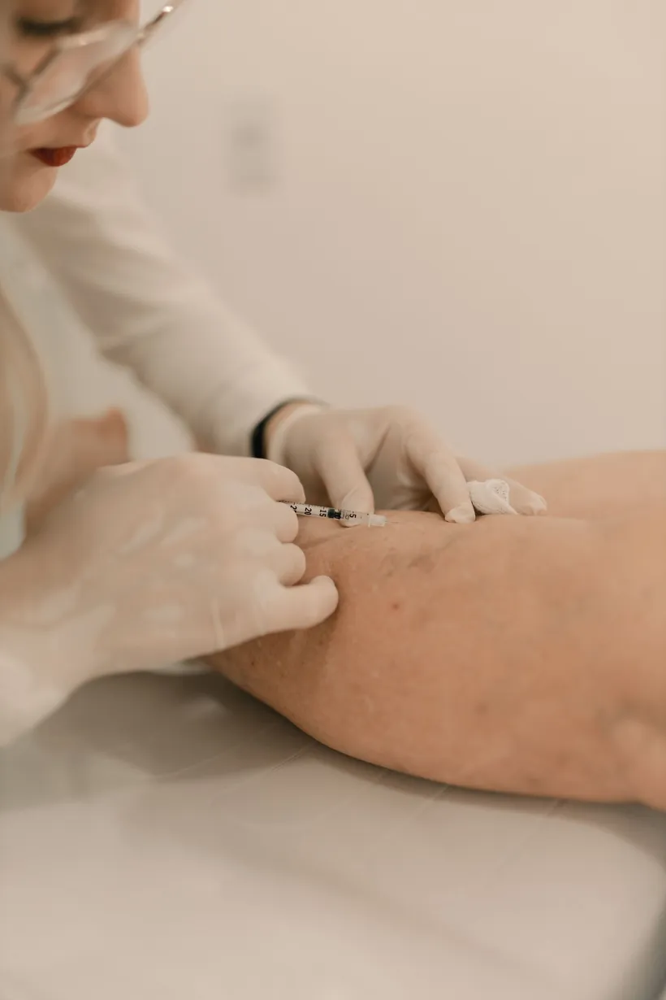

Várices, arañitas e insuficiencia venosa. Te explicamos qué pasa por dentro y cómo lo solucionamos.
Desliza para explorar ↓Cómo funciona
De tus piernas al corazón, contra la gravedad, todo el día.


Qué tratamos
Arañitas, várices e insuficiencia venosa, con diagnóstico preciso y tratamientos mínimamente invasivos.
Cuándo consultar
Si reconoces alguna de estas señales, una valoración a tiempo marca la diferencia.
Várices o arañitas que aparecen y aumentan, a veces dolorosas.
Piernas cansadas e hinchadas, sobre todo al final del día.
Color o textura distintos cerca de los tobillos.
En corto
Dentro de las venas hay pequeñas válvulas que dejan pasar la sangre hacia arriba y evitan que se devuelva. Cuando se debilitan o se dañan, la sangre se acumula y la vena se dilata. A ese fallo del retorno venoso se le llama insuficiencia venosa, y es la causa más frecuente detrás de las várices. Influyen los antecedentes familiares, la edad, los embarazos y pasar muchas horas de pie o sentada.
No. Además de verse, pueden causar pesadez, dolor, ardor, calambres nocturnos e hinchazón en tobillos y pantorrillas. Con el tiempo, si no se atienden, pueden aparecer cambios en el color de la piel de los tobillos e incluso heridas que tardan en cerrar.
Hoy buena parte de los casos se resuelve con procedimientos mínimamente invasivos, que suelen hacerse de forma ambulatoria, con anestesia local y una vuelta rápida a la vida normal. Cuál corresponde en tu caso lo define el diagnóstico, porque no todas las várices se tratan igual.
No. Es un procedimiento tranquilo y sin anestesia: te acuestas o te pones de pie, el profesional aplica un gel sobre la piel de la pierna y desliza el transductor por distintos segmentos de la vena, presionando suavemente en algunos puntos.
Conviene pedir una valoración si los síntomas se repiten o van empeorando, si ya notas várices, arañitas o hinchazón visible, si aparecen cambios en el color o la textura de la piel cerca del tobillo, o si la pesadez afecta tu día a día. Si la hinchazón aparece de forma repentina en una sola pierna, con dolor, calor o enrojecimiento, busca atención médica sin demora.
Tratamientos
Durante años, tratar las várices significaba una cirugía con hospitalización. Hoy buena parte de los casos se resuelve de forma ambulatoria, con anestesia local y una vuelta rápida a la vida normal. Cuál conviene en tu caso depende de lo que muestre el diagnóstico: no todas las várices se tratan igual.
Es el punto de partida, no un tratamiento. Combina una ecografía, que forma la imagen de la vena, con la medición del movimiento de la sangre: en qué dirección va y a qué velocidad. Permite ver si las válvulas siguen cerrando bien o si dejan que la sangre se devuelva, que es la causa más frecuente de várices y piernas pesadas. Es indoloro, sin radiación y no requiere anestesia.
Con una aguja muy fina se aplica una solución dentro de la vena. Esa solución irrita su pared interna y hace que se cierre; con el paso de las semanas el cuerpo la reabsorbe y la sangre se redirige hacia venas sanas cercanas. Es la opción más usada para arañitas y várices pequeñas o medianas. Suele necesitar más de una sesión y el resultado se nota de forma progresiva.
Para las venas de mayor calibre, las guías clínicas actuales de las sociedades de cirugía vascular sitúan a las técnicas endovenosas mínimamente invasivas por delante de la cirugía tradicional. Se hacen de forma ambulatoria y con anestesia local. Si tu caso las requiere, te explicamos en la valoración en qué consisten y qué esperar de la recuperación.
Ejercen una presión controlada, más fuerte en el tobillo y decreciente hacia arriba, que ayuda a que la sangre regrese hacia el corazón en lugar de acumularse. Acompañan al tratamiento y, en algunos casos, lo preceden. El grado adecuado no se elige a ojo: depende de tu caso y de la circulación arterial, por lo que conviene que lo indique un profesional.
No sustituyen al tratamiento, pero cambian el día a día: moverte cada cierto tiempo si trabajas muchas horas de pie o sentada, elevar las piernas por encima del nivel del corazón al descansar, evitar el calor directo prolongado sobre las piernas y mantener un peso saludable.
Ningún procedimiento elimina el riesgo de que aparezcan venas nuevas, y los resultados varían de una persona a otra. Preferimos decírtelo antes: en la valoración te explicamos qué es razonable esperar en tu caso concreto, sin garantías de catálogo.
Dónde estamos
Atendemos en Medellín, en la Calle 2 Sur No. 46-55, oficina 1316, y recibimos pacientes de toda el área metropolitana y de Antioquia. La valoración vascular incluye el eco doppler, así que sales de la consulta sabiendo cómo está funcionando de verdad la circulación de tus piernas y con un plan concreto, no con una lista de posibilidades.
Si te llega una remisión de otro profesional, o quieres una segunda opinión sobre un diagnóstico que ya tienes, trae los estudios previos: ayudan a tener el panorama completo desde el primer día.

Da el primer paso
Agenda una valoración con eco doppler y conoce el estado real de tu circulación.
Del blog médico
Artículos escritos y revisados por nuestro equipo médico para que llegues a la consulta sabiendo qué preguntar.
Por qué aparecen las várices y qué opciones ambulatorias existen hoy.
LeerLas señales tempranas que suelen confundirse con cansancio normal.
LeerEn qué consiste el examen que confirma el diagnóstico, paso a paso.
LeerPor qué salen esas venitas finas y qué se puede hacer con ellas.
Leer